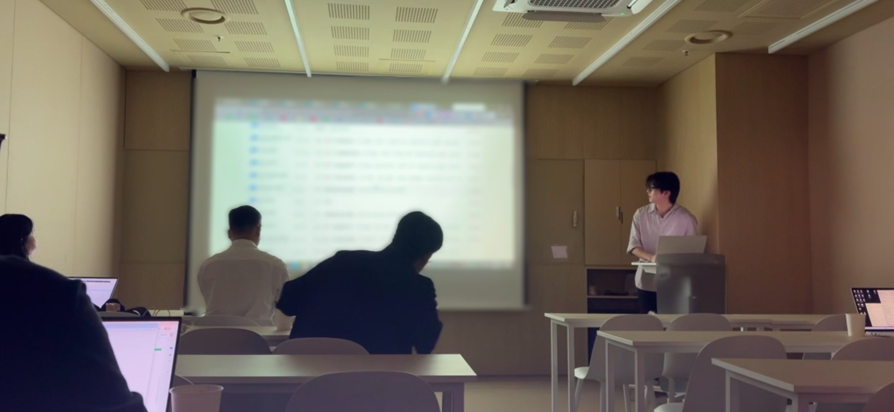
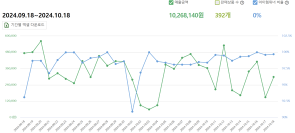
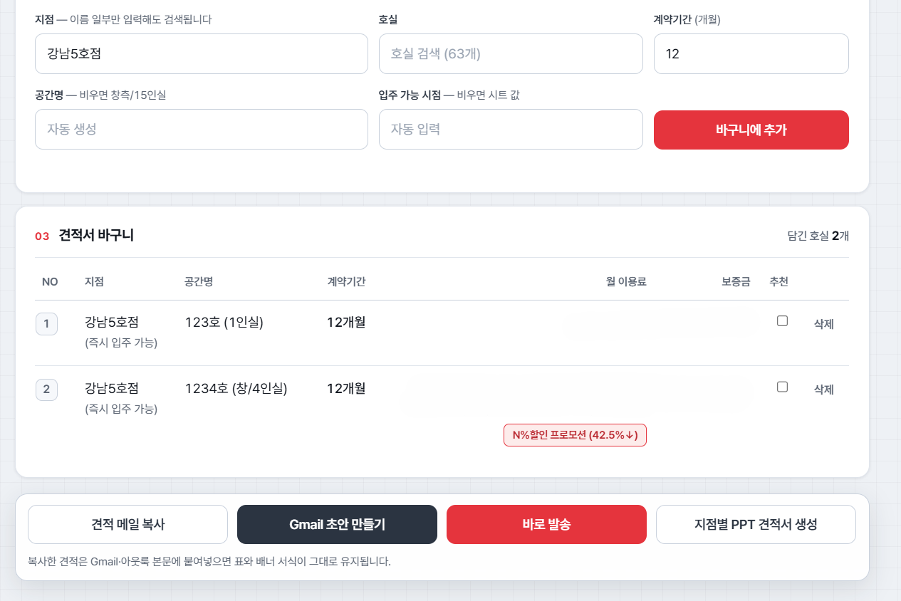
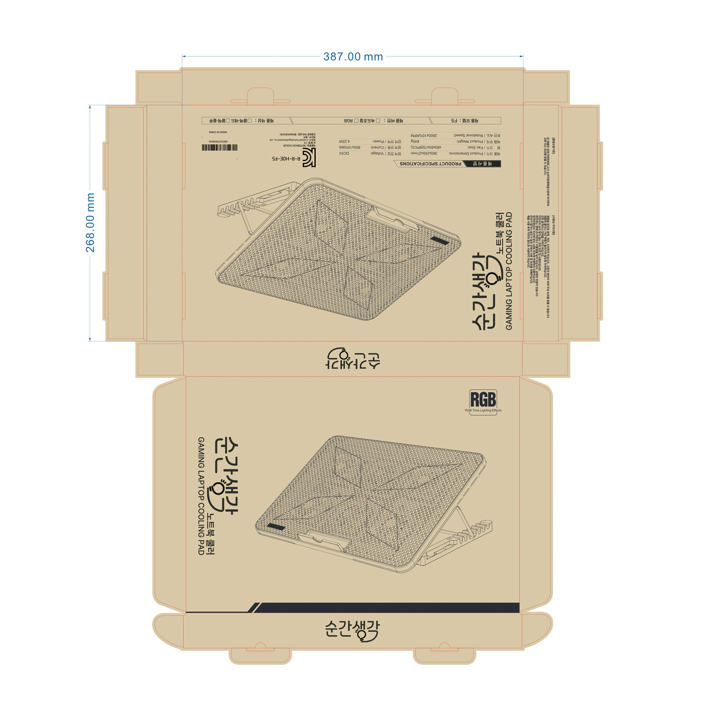
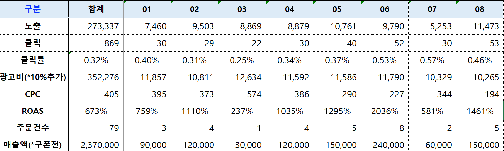
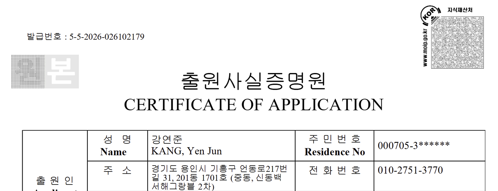

4팀 29명직접 만든 팔로업 도구를 사내팀이 Salesforce 정식 기능으로 구현해 사용
1,026만원1인 이커머스 최대 월매출, 쿠팡 평균 구매 전환율 15%
47거래일SentiQuant 제출 후 모의운영으로 자사 가설을 직접 반증, 체결 원장 72/72 일치
03주요 이력
B2B 오피스 세일즈 | Sales Ops2026.06 – 2026.09
패스트파이브 오피스세일즈그룹, 인턴 | 7월 9건 24석 계약 | 정규 과업 외 업무 개선 도구 2종 자발적 제안과 개발
SentiQuant | AI 투자 의사결정2026.03 – 현재
4인 팀 팀장, 프로젝트 총괄 | FinBERT와 제한형 LLM 통합 및 운영 검증 | 산학프로젝트 성적 A
1인 이커머스 | 공급사 협상2024.07 – 2026.01
쿠팡, 스마트스토어 | 2024.10 최대 월매출 10,268,140원 | MOQ 2,000개에서 1,000개로 조정
세렌딥 연합 창업동아리 | 창설 회장2025
교내 20여 개 동아리에 제안해 8개 합류 | 지원사업 확보 후 경진대회 총괄, 참가 20명 | 대한상공회의소 광주인력개발원 우수상
02PROJECTS | OVERVIEW
PORTFOLIO / 2026
3 Projects, 5 Cases | From Problem to Measurable Result
문제를 발견하고, 직접 해결하며, 결과로 검증한 세 가지 경험.
01 | CASE 01, 022026.06 – 2026.09
패스트파이브 B2B 오피스 세일즈
B2B SalesSales OpsSalesforce
핵심 역할
오피스세일즈 담당자(인턴), Sales Ops
입사 2개월 차, 근속 3개월 이하 신입군 12명 중 전환율 1위
정규 과업 외 업무 개선 도구 2종을 자발적으로 제안하고 개발
견적 자동화는 사내 배포, 팔로업 도구는 사내팀이 Salesforce 정식 기능으로 구현
9건2026.07 계약 24석
22.0%전환율 신입군 1위
10분→30초견적 1건 처리시간

02 | CASE 03, 042024.07 – 2026.01
1인 이커머스 비즈니스 창업
E-commerceIPSCM
핵심 역할
기획 및 총괄 운영
판매 실적을 근거로 해외 공급사 OEM MOQ를 2,000개에서 1,000개로 조정
2024.07 – 09 쿠팡 평균 구매 전환율 15%, ROAS 1110%
선행상표 조사부터 출원과 최종 등록까지 직접 진행
1,026만원2024.10 최대 월매출
15%구매 전환율
1110%쿠팡 평균 ROAS

03 | CASE 052026.03 – 현재
SentiQuant AI 투자 의사결정
FinBERTKIS API운영 검증
핵심 역할
4인 팀 팀장, 프로젝트 총괄
뉴스와 Reddit 비정형 데이터를 FinBERT로 분석
기술지표와 규칙을 우회하지 못하는 제한형 LLM Router를 결합
제출 후 모의체결로 가설을 검증하고, 뒤집힌 가설은 폐기
47거래일제출 후 모의운영
72/72체결 원장 일치
304개회귀 테스트
NEWS REDDITFINBERT SIGNALLLM ROUTERKIS VALIDATE
WHY THIS MAPS TO TECHNICAL SALES, PRE-SALES
고객 문제 진단
리드 41건의 이전 사유와 제약조건 진단 | 구매 퍼널을 지표로 분해해 이탈 지점 특정
직접 구현
영업 도구 2종을 기획부터 배포까지 | AI 모델과 외부 API를 하나의 판단 흐름으로 통합
수치로 검증
견적 10분에서 30초 | 47거래일 모의운영으로 자사 가설을 스스로 반증
조직 설득
사내 도구 채택과 팀 전체 발표 | 판매 실적을 근거로 공급사 MOQ 조건 조정
03B2B OFFICE SALES | FASTFIVE
PORTFOLIO / 2026
Case 01 | B2B 오피스 세일즈 풀사이클, 패스트파이브
입사 2개월 차, 근속 3개월 이하 신입군 전환율 1위. 41개 리드에서 9건의 계약 성사.
오피스세일즈그룹 소속, 오피스세일즈 담당자로 근무한 인턴. 근속 1.9개월 시점에 근속 3개월 이하 신입군 12명 중 리드에서 계약 전환율 1위(22.0%, 신입 평균의 2.2배), 전체 32명 기준 11위. 2026년 7월 배분 리드 41건을 니즈 진단, 투어, 협상, 팔로업으로 계약까지 연결.
01문의 접수와 니즈 진단
기업 규모, 이전 사유, 예산, 입주 시점을 확인하고 질문을 통해 숨은 제약조건까지 구체화
02지점 투어와 맞춤 컨설팅
고객 조건에 맞춰 지점과 좌석 구성을 좁혀 제안하고, 투어에서 실제 사용 시나리오까지 설명
03제안과 협상
견적과 계약 조건을 조율하고, 검토 단계별 의사결정자와 후속 일정을 명확히 관리
04계약 체결
2026년 7월 9건 24석 체결 | 평균 계약기간 6.5개월 | 평균 객단가 49.4만원
22.0%
리드에서 계약 전환율 근속 3개월 이하 신입군 12명 중 1위, 평균의 2.2배
11위
전체 32명 기준 전환율 순위 조직 평균의 1.21배, 상위 약 1/3
49.4만원
평균 객단가, 전사 8위 실적자 평균 42.5만원 대비 +16.2%
48%
월 목표 달성률 신입군 2위, 평균 21.7%의 2.2배
41건
2026년 7월 배분 리드
→
9건 / 24석
계약서 작성과 회원비 납부 완료 취소 제외
두 개의 숫자를 함께 봅니다
신입군에서는 1위지만 전체 32명 기준으로는 11위입니다. 짧은 근속에서 나온 결과를 조직 전체 기준으로도 함께 제시합니다. * 22.0%는 2026년 7월 배분 리드 41건 대비 계약서 작성과 회원비 납부를 완료한 계약 9건 기준이며 취소 건은 제외.
04SALES OPS | INTERNAL TOOLS | SALESFORCE
PORTFOLIO / 2026
Case 02 | 세일즈 비효율 발굴과 사내 시스템 반영
영업 현장의 반복 비효율을 직접 도구화. 견적 1건 10분을 30초로, 팔로업 구조는 사내 정식 기능으로.
지시받은 과업이 아니라 직접 발견한 문제로 도구 2종을 제안, 기획하고 Claude 보조로 개발. 견적 자동화는 사내 배포 후 약 12명에게 확산. 팔로업 Chrome 확장은 전사 직접 배포가 중단됐지만 사내팀이 UI와 핵심 기능을 반영해 Salesforce 정식 기능으로 구현. 도입 성과를 팀 전체에 발표.
01 PROBLEM | 데이터는 있는데 판단이 없던 구조
리드 회수 기준이 여러 개라 담당자가 5개 규칙을 매일 직접 계산해야 했고, Salesforce 기본 화면만으로는 오늘 처리할 리드의 우선순위가 보이지 않았음.
제약: Salesforce 개발 권한이 없어 기존 데이터를 읽기 전용으로 수집해 우선순위로 정렬하는 Chrome 확장으로 프로토타입을 구현.
02 ITERATION | 현업 사용 흐름에 맞춰 4차 재설계
v1단일 HTML 대시보드새로고침하면 소실
v2초경량 노트와 자동 저장고객 관리 기능 필요
v3풀 대시보드와 붙여넣기수동 복사의 한계
v4Chrome 확장, 자동 수집사내 테스트 후 배포 검토
정식화사내팀이 UI와 핵심 기능 반영2026.08.27 기준 4팀 29명

03 TOOLS | 업무 개선 도구 2종 개발, 플랫폼 1종 기획
공실 견적 자동화 시스템직접 개발, 사내 배포
공실과 가격 시트에서 견적 메일과 지점별 PDF, PPT를 자동 생성. 항목을 위치가 아닌 이름으로 탐색하게 설계해 실제 시트 개편 2회를 코드 수정 없이 통과.
Google Apps Script | Gmail, Slides API | Claude 보조 | 회귀 테스트 13종 | 서식 2종
고객 팔로업 대시보드사내 테스트 후 정식 기능 반영
Salesforce 리드와 영업기회를 읽기 전용으로 수집해 회수 임박 순으로 정렬. 전사 직접 배포는 중단됐고, 파일 전체를 사내팀에 전달해 사내팀이 UI와 핵심 기능을 반영한 정식 기능을 구현.
Chrome MV3 | JavaScript | SOQL | Claude 보조 | 약 6,300줄 | 서버, 의존성, 빌드 0
부동산 관리 플랫폼기획 참여, 목업
기획 회의에 참여해 요구사항 정의와 화면 목업 제작을 담당.
10분→30초견적 1건 처리시간 직접 측정
약 12명견적 자동화 사용 확산
29명정식 기능 사용 영업 4팀
SAME PATTERN, 2 YEARS EARLIER전자소송 데이터 입력 RPA2024 상반기, 약 4개월 | 근무처 비공개
단기 근무 중 Excel에서 전자소송 웹 폼으로 수기 입력하던 병목을 발견해 Python RPA를 직접 구현하고 도입을 제안. 실제 업무에 사용됐고 수작업 5단계를 1단계로 축소.
게이밍 주변기기 니치를 발굴해 수입 제품을 리브랜딩하고, 판매 실적을 근거로 해외 공급사 MOQ를 2,000개에서 1,000개로 조정. 3주 소싱 리드타임을 역산해 재고를 운영했고 2024.10 최대 월매출 10,268,140원을 달성. 선행상표 조사부터 출원과 최종 등록까지 직접 진행. 광고와 상세페이지 최적화 성과는 Case 04에서 상술.

PRIVATE BRAND | 패키지 디자인 직접 제작, 로고, 캐릭터, 박스
01시장 분석과 포지셔닝
범용 쿨러 시장에서 게이밍과 RGB 니치 발굴, 타깃 고객 명확화 및 경쟁 구도 분석
02브랜드와 패키지 직접 설계
수입 제품을 리브랜딩하고 리패키징 | 로고, 캐릭터, 박스 이미지를 직접 제작해 범용 제품을 브랜드 상품으로 전환
03공급사 조건 협상
해외 공급업체와 OEM 진행 | 판매 실적을 근거로 MOQ 2,000개에서 1,000개로 조정 | 3주 리드타임 역산 재고 관리
04권리 확보와 판매 최적화
KIPRIS 선행상표 조사 후 출원과 최종 등록 절차를 직접 진행 | 광고와 상세페이지 데이터 최적화는 Case 04 참조
1,026만원2024.10 최대 월매출 취소와 반품 반영
2,000→1,000개해외 공급사 OEM MOQ 조정
3주소싱 리드타임 역산 재고 운영
등록완료KIPRIS 선행조사 출원과 최종 등록


06BUYER PSYCHOLOGY | PERSUASION DESIGN
PORTFOLIO / 2026
Case 04 | 데이터 기반 구매 퍼널과 설득 구조 재설계
"왜 안 사는가"를 데이터로 진단하고, 설득 구조를 처음부터 다시 설계.
고객의 노출, 클릭, 구매 여정을 지표로 나눠 이탈 지점을 찾고, 구매객 검색어와 CPC, ROAS를 바탕으로 광고와 상세페이지의 설득 순서를 재설계. 고객이 왜 선택하지 않는지부터 진단한 사례.